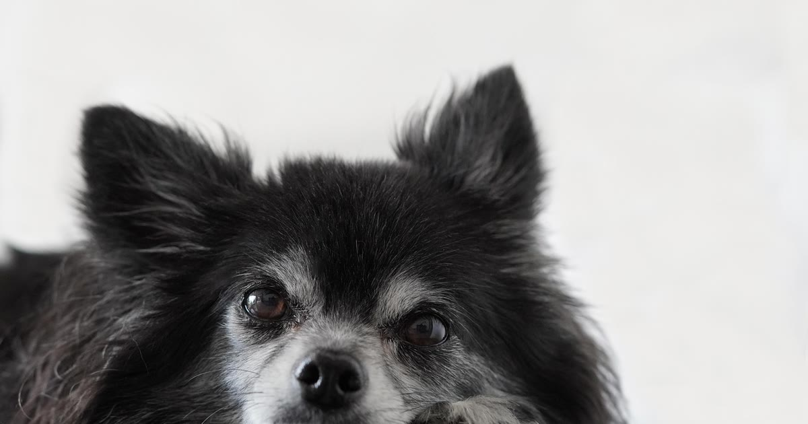

Em cães de pequeno porte, o peso do dispositivo GPS importa mais do que qualquer outro recurso do produto. Um acessório pensado para cães grandes pode ser desconfortável, atrapalhar o movimento ou até machucar um cão pequeno, mesmo que a tecnologia de rastreamento seja excelente.
Existem modelos bem leves no mercado — alguns pesam entre 8 e 9,3 gramas, o que é considerado adequado para animais de pequeno porte, enquanto cães maiores toleram dispositivos mais robustos, com bateria maior (achados de comparativos de mercado consultados por KitabPet, retrieved 2026-08-22). O ideal é checar o peso do dispositivo isoladamente (sem a coleira) e comparar com o peso do próprio animal — regra prática usada para outros acessórios pet também vale aqui: quanto menor o cão, maior a proporção que qualquer peso extra representa.
O erro mais comum é escolher pelo preço ou pela marca mais conhecida, sem checar o peso e as dimensões do dispositivo na ficha técnica do anúncio. Outro erro é ignorar o alcance da tecnologia: cães pequenos que só circulam em área conhecida (apartamento, quintal pequeno) muitas vezes não precisam do modelo com chip de operadora mais caro — um Bluetooth leve já resolve.
veja outros erros comuns ao usar coleira GPS no pet
Porte pequeno não significa que o cão não vai tentar fugir; o comportamento de fuga está mais ligado a temperamento, socialização e estímulo do que ao tamanho. Se esse é o seu caso, vale equilibrar peso leve do dispositivo com um recurso de cerca virtual (geofence) para receber alerta rápido.
cães pequenos também fogem — veja como resolver
Para cães de pequeno porte, a pergunta certa não é "qual a melhor coleira GPS do mercado", mas "qual dispositivo é leve e discreto o suficiente para não incomodar o meu cão". Priorize peso e fixação segura antes de qualquer recurso avançado — um dispositivo pesado demais tende a ser removido pelo próprio tutor por desconforto do animal, o que anula qualquer benefício da tecnologia.
volte ao guia completo de coleira GPS para pet
Escrito pela Equipe Smart Pet Gadgets, redação especializada em comparativos de produtos pet no mercado brasileiro. Veja nossa política editorial e como verificamos as fontes citadas neste artigo.
🐾 Confira o preço e a disponibilidade atual no Mercado Livre.
Ver no Mercado Livre →Link de afiliado: podemos receber uma comissão por compras feitas através deste link, sem custo adicional para você.
Nildo Alves — curadoria de produtos pet no Smart Pet Gadgets. Testa e pesquisa produtos para cães e gatos, cruzando especificações de fabricante com boas práticas veterinárias e dados de mercado.
Sobre o Smart Pet Gadgets · Contato · Política editorial e de afiliados